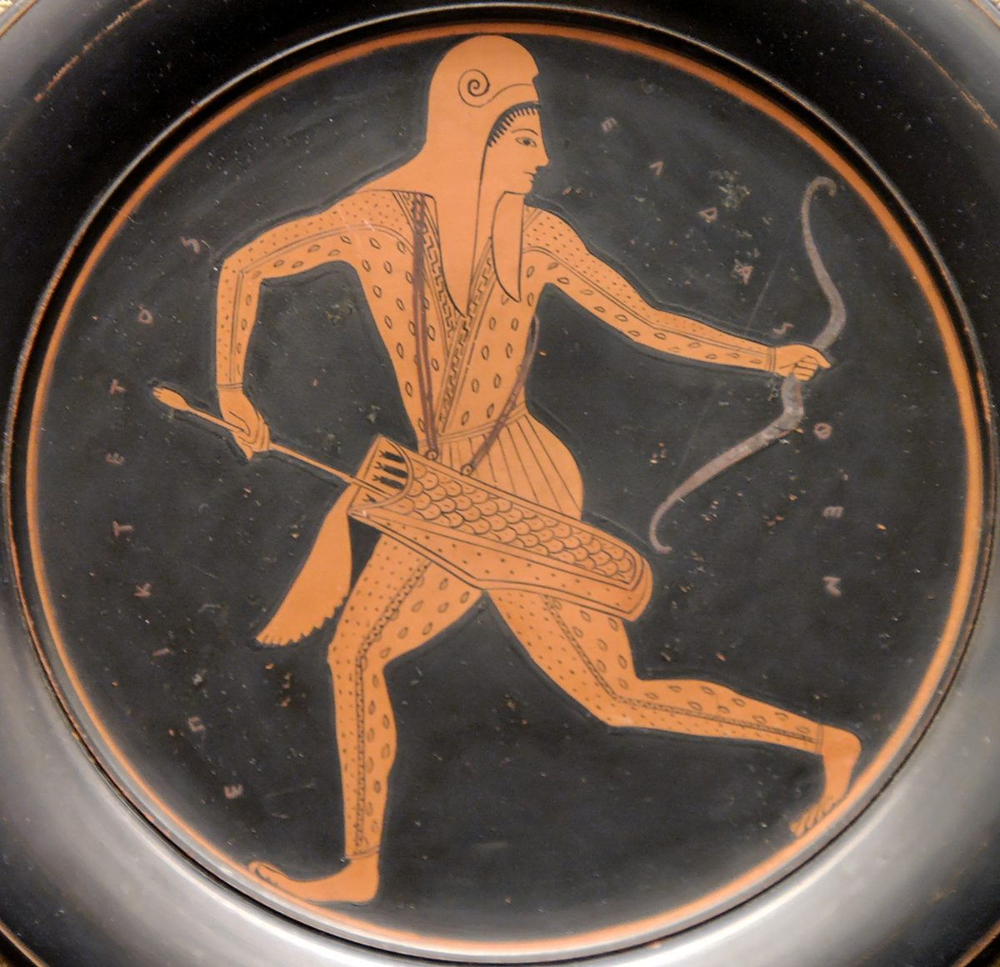

Colossians 3 — The Mister Translation

⚠ An Athenian painter’s Scythian, in the patterned dress by which Greek artists marked these horsemen of the steppes. ‘Barbarian, Scythian, slave, free; but Christ is all things and in all’ (verse 11).

Translator’s Notes
“If, then, you were raised with Christ, seek the things above.” The “if” assumes it: they were “raised with him” at Colossians 2:12. “Seated at the right hand of God” is the language of Psalm 110:1, “Sit at my right hand,” as Jesus quotes it at Mark 12:36, and of Ephesians 1:20, “seated him at his right hand in the heavenly places.” The KJV reads “If ye then be risen with Christ, seek those things which are above”; the NWT 1984 reads “go on seeking the things above”; the NIV reads “set your hearts on things above.”
“Set your minds on the things above … your life is hidden with Christ in God.” Phroneō is the verb of Philippians 3:19, “who set their minds on earthly things,” here turned the other way. Kekryptai, “is hidden,” stands in one verse in that form; it recalls the treasures “hidden away” in him at Colossians 2:3. Readers take it as kept safe, or as not yet seen, or both. The KJV reads “Set your affection on things above”; the ASV reads “Set your mind on the things that are above”; the TLB reads “Let heaven fill your thoughts.”
“When Christ, your life, is made visible.” Phaneroō is “made visible,” as at Ephesians 5:13 and Mark 4:22; at Colossians 1:26 the same verb is the mystery “made plain.” What is hidden now (v3) will be seen. Westcott–Hort and the Byzantine text read “our life,” and so the KJV: “When Christ, who is our life, shall appear”; the NIV reads “When Christ, who is your life, appears.”
“Put to death the members that are on the earth … greed, which is idolatry.” The “members” are read as the body’s parts, used for these things, or as the vices themselves, named as members. The list follows Ephesians 5:3 and Ephesians 5:5, “greedy person — that is, an idolater.” Pleonexia, “greed,” is wanting more (dictionary). The Byzantine text reads “your members,” and so the KJV: “Mortify therefore your members which are upon the earth”; the NWT 1984 reads “Deaden, therefore, YOUR body members”; the NIV reads “whatever belongs to your earthly nature.”
“The wrath of God is coming upon the sons of disobedience.” The phrase of Ephesians 5:6 and Ephesians 2:2. Westcott–Hort and Tregelles leave out “upon the sons of disobedience,” and so the NIV: “Because of these, the wrath of God is coming”; the NWT 1984 reads “On account of those things the wrath of God is coming”; the KJV reads “the wrath of God cometh on the children of disobedience.”
“Anger, fury, malice, slander, obscene talk … having stripped off the old man … and having put on the new.” The list is close to Ephesians 4:31; aischrologia, “obscene talk,” stands in one verse of the New Testament (dictionary). “Stripped off” is the third use of the verb of 2:11 and 2:15, and the clothing picture is that of Ephesians 4:22 and Ephesians 4:24, “put on the new man.” Here the Greek says only “the new,” ton neon, and “man” is carried from v9. Anakainoō, “renew,” stands in two verses: 2 Corinthians 4:16, “our inner self is being renewed day by day,” and this one. “According to the image of the one who created it” recalls Genesis 1:27 and Colossians 1:15, “the image of the invisible God” (dictionary). The KJV reads “And have put on the new man”; the NWT 1984 reads “clothe yourselves with the new [personality]”; the NIV reads “and have put on the new self.”
⚠ “No Greek and Jew … barbarian, Scythian, slave, free.” The pairs of Galatians 3:28 and 1 Corinthians 12:13, without “male and female,” and with two names added. Barbaros stands in five verses, among them Acts 28:2, “the barbarians showed us extraordinary kindness,” and Romans 1:14 (dictionary); Skythēs, “Scythian,” stands in one verse (dictionary). The Scythians, from the steppes north of the Black Sea, are reported to have been the Greeks’ byword for the wildest of outsiders. “Christ is all things and in all.” The KJV reads “Barbarian, Scythian, bond nor free”; the NWT 1984 reads “circumcision nor uncircumcision, foreigner”; the NIV reads “Here there is no Gentile or Jew.”
“Put on … inward affection of compassion, kindness, humility, gentleness, patience.” Splanchna is the “inward affection” of Philippians 2:1 (dictionary). Tapeinophrosynē, “humility,” the word used of the teachers’ practice at 2:18 and 2:23, is here a garment to put on (dictionary). The list follows Ephesians 4:2, “with all humility and gentleness, with patience, bearing with one another.” Chrēstotēs is the “kindness” of Ephesians 2:7 (dictionary). The KJV reads “bowels of mercies, kindness, humbleness of mind, meekness, longsuffering”; the NWT 1984 reads “the tender affections of compassion”; the NIV reads “clothe yourselves with compassion, kindness, humility, gentleness and patience.”
“Freely forgiving each other … just as the Lord freely forgave you.” Charizomai, as at Ephesians 4:32, “just as God also in Christ freely forgave you” (dictionary). Momphē, “complaint,” stands in one verse of the New Testament. The Byzantine text reads “Christ,” and so the KJV: “even as Christ forgave you, so also do ye”; the NWT 1984 reads “Even as Jehovah freely forgave YOU”; this translation prints “the Lord,” since the Lord of these verses is the Lord Jesus of v17.
⚠ “Love, which is the bond of maturity … the peace of Christ be umpire.” Syndesmos, “bond,” stands in four verses: Acts 8:23, “the bond of wickedness,” Ephesians 4:3, “the bond of peace,” the “ligaments” of Colossians 2:19, and this one (dictionary). Teleiotēs stands in two verses: this one and Hebrews 6:1; it is the noun of teleios, the “mature” of Colossians 1:28, and this translation keeps the root. Brabeuō, “be umpire,” is the plain verb inside the katabrabeuō of 2:18, “disqualify” (dictionary): there the false umpire, here the true one. The KJV reads “which is the bond of perfectness”; the NIV reads “which binds them all together in perfect unity”; the NWT 1984 reads “for it is a perfect bond of union.” The Byzantine text reads “the peace of God,” and so the KJV: “And let the peace of God rule in your hearts.”
“Let the word of Christ dwell in you richly … psalms, hymns, spiritual songs.” The three nouns are those of Ephesians 5:19, and “teaching and admonishing … in all wisdom” are the words of Colossians 1:28, now said of the readers to one another. En tē chariti is “with gratitude” or “with grace.” The critical text reads “to God”; the Byzantine reads “to the Lord,” and so the KJV: “singing with grace in your hearts to the Lord”; the ASV reads “singing with grace in your hearts unto God”; the NWT 1984 reads “singing in YOUR hearts to Jehovah.”
“Whatever you do, in word or in deed, do everything in the name of the Lord Jesus.” The close of Ephesians 5:20, “giving thanks always for all things in the name of our Lord Jesus Christ to God the Father.” Thanks runs through the chapter: “be thankful” (v15), “with gratitude” (v16), “giving thanks” (v17). The KJV reads “do all in the name of the Lord Jesus”; the TLB reads “let it be as a representative of the Lord Jesus.”
⚠ “Wives, submit to your husbands, as is proper in the Lord.” This is the shorter form of Ephesians 5:22 and the verses after it. Hypotassō is to put oneself in order under another (dictionary). Anēkō, “proper,” stands in two verses: Ephesians 5:4, “which are not proper,” and this one. The Byzantine text reads “your own husbands,” and so the KJV: “Wives, submit yourselves unto your own husbands, as it is fit in the Lord”; the ASV reads “Wives, be in subjection to your husbands”; the TLB adds “for that is what the Lord has planned for you.”
⚠ How this passage has been used. Like its parallel in Ephesians (see the note at Ephesians 5:21), this verse has been used to tell wives to stay with and obey husbands who abused them; that use is part of the record of the churches. The verse speaks to wives directly, as people who act, and it gives no husband an instruction to make his wife submit. Husbands are told to love, and not to be bitter: pikrainō stands in four verses, this one and three in Revelation, among them Revelation 10:10, “my stomach was made bitter.” Readers still divide over what the passage asks: a lasting order in marriage, or the custom of the day changed from within. This page sets out both and does not choose. The KJV reads “be not bitter against them”; the NIV reads “do not be harsh with them”; the NWT 1984 reads “do not be bitterly angry with them.”
“Children, obey your parents in everything … Fathers, do not irritate your children.” The parallel of Ephesians 6:1 and Ephesians 6:4; here “in everything” takes the place of “in the Lord.” Erethizō stands in two verses: 2 Corinthians 9:2, where Achaia’s zeal “has stirred up” the others, in a good sense, and this one (dictionary). Athymeō, “lose heart,” stands in one verse. The KJV reads “Fathers, provoke not your children to anger, lest they be discouraged”; the NIV reads “Fathers, do not embitter your children”; the NWT 1984 reads “do not be exasperating your children.”
⚠ “Slaves, obey in everything your masters according to the flesh.” The parallel of Ephesians 6:5 and the verses after it, where ophthalmodoulia, “eye-service,” and anthrōpareskos, “people-pleaser,” also stand (dictionary). “Fearing the Lord”: the Lord is Christ, as v24 says. The Byzantine text reads “God,” and so the KJV: “but in singleness of heart, fearing God”; the ASV reads “fearing the Lord”; the NWT 1984 reads “with fear of Jehovah.”
⚠ How this passage has been used. These verses, with Ephesians 6:5, were cited by defenders of slavery as the Bible’s word to the enslaved (see the note at Ephesians 6:5); that use is part of the record. The passage speaks to slaves as people who will receive “the repayment of the inheritance” from the Lord, an heir’s portion; and it ends with “there is no partiality.” The instruction to masters follows at 4:1, across the chapter division. The letter to Philemon, on the usual reading sent to the same town, asks that a slave be received “no longer as a slave but more than a slave, a beloved brother” (Philemon 1:16). Readers divide as they do over Ephesians 6: rules for life inside an order the writer did not expect to change, or an order already undone from within. This page sets out both and does not choose.
“It is the Lord Christ you serve as slaves … the one who does wrong will receive back the wrong.” Douleuete can be read as a statement or as a command, “Serve the Lord Christ.” Antapodosis, “repayment,” stands in one verse of the New Testament. Whose wrong v25 means, a slave’s, as at Philemon 1:18, “if he has wronged you,” or a master’s, the next verse’s subject, is read both ways. “No partiality” is the word of Romans 2:11 and Ephesians 6:9 (dictionary). The KJV reads “for ye serve the Lord Christ”; the Douay reads “Serve ye the Lord Christ”; the NWT 1984 reads “SLAVE for the Master, Christ.”
Patterns worth carrying forward
Where this translation keeps the exact words: “raised with,” as at 2:12; “set your minds,” as at Philippians 3:19; “made visible,” as at Ephesians 5:13; “sons of disobedience,” as at Ephesians 5:6; “stripped off,” as at 2:11; “the old man,” as at Ephesians 4:22; “image,” as at 1:15; “inward affection,” as at Philippians 2:1; “humility,” as at 2:18; “freely forgiving,” as at Ephesians 4:32; “bond,” as at Ephesians 4:3; “maturity” for the noun of “mature” at 1:28; “umpire” beside “disqualify” at 2:18; “proper,” as at Ephesians 5:4; “slaves,” “eye-service” and “from the soul,” as at Ephesians 6:5–6; and “no partiality,” as at Romans 2:11.
Echoes paid. Raised with him from Colossians 2:12; hidden away from Colossians 2:3; stripping off from Colossians 2:11, now complete; the image of Colossians 1:15 and Genesis 1:27; humility, misused at Colossians 2:18, now a virtue; the ligaments of Colossians 2:19 become the bond of love; the umpire of Colossians 2:18; teaching and admonishing in all wisdom from Colossians 1:28; and the household of Ephesians 5:22 and Ephesians 6:5.
Echoes planted. The masters’ instruction at 4:1, “knowing that you also have a Master in heaven”; “devote yourselves to prayer” at 4:2; and Tychicus and Onesimus, “one of you,” at 4:7–9.
Next in this book: Colossians 4, already on these pages. Masters, prayer, Tychicus and Onesimus, and the letter from Laodicea.